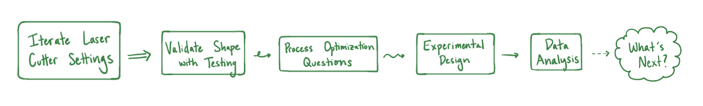
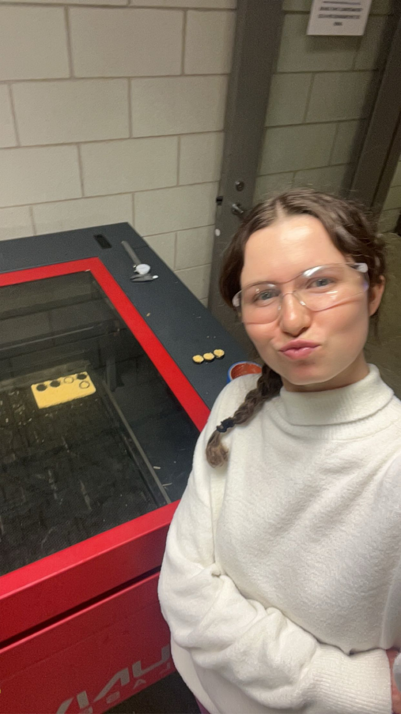
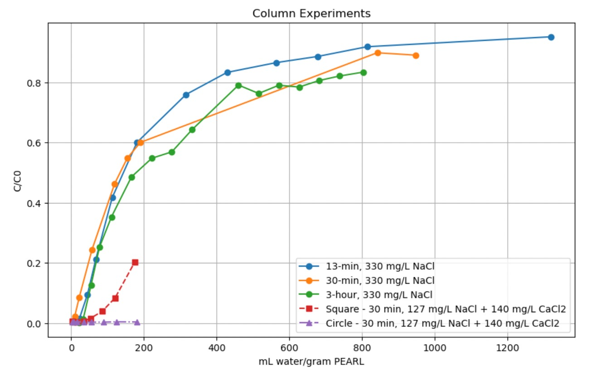
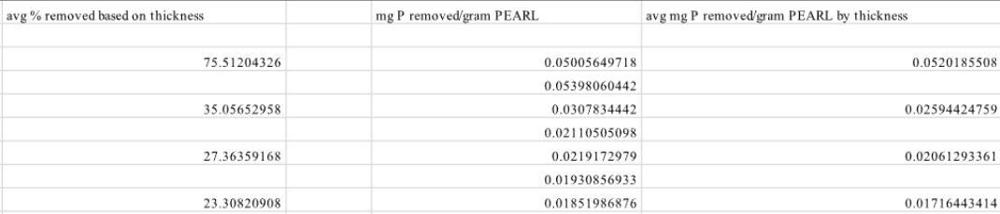
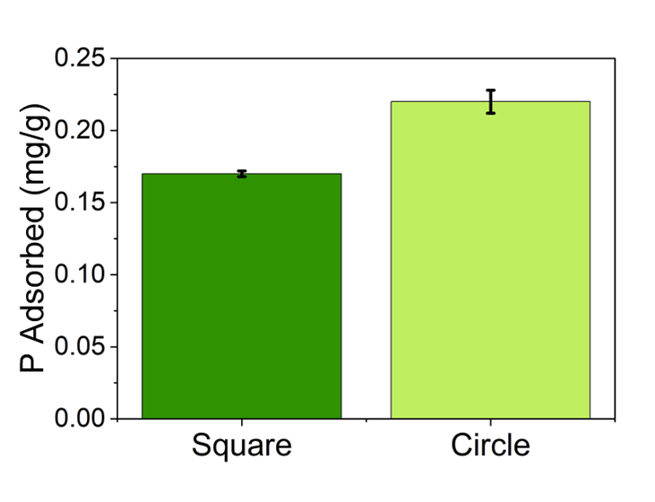

As an Undergraduate Research Assistant in the Dravid Group at Northwestern, I work on taking a novel material, a modified cellulose sponge with enhanced phosphate absorption properties, closer to real-world, scalable water treatment applications. My work sits at the intersection of process design and sustainable materials science: figuring out how to prepare and deploy this material consistently, efficiently, and at a scale that makes it meaningful beyond the lab. I did not expect to find material science this compelling. But there is something genuinely exciting about standing at the edge of a technology that could have real environmental impact and asking: what does it take to get this out of the lab? That question, how to scale a novel solution without losing what makes it work, is exactly the kind of problem I want to keep solving.
Problem Statement
Develop and optimize preparation and deployment methods for a novel cellulose sponge material to increase phosphate removal performance and accelerate the process from lab-scale experimentation to real-world water treatment application.
Methodology

Developing a Process
The PhD Student I work under, Kelly Matuszewski, was interested in the uniformity and shape of the cellulose sponge in the column to slow the preferential flow of water. I started by developing a processing method to lasercut the untreated sponge, introducing a circular shape. I iterated the ideal settings on the laser cutter until I found the settings that limited sponge char to maintain materials properties similar to the control.

Testing the New Shape
In the first experiment, the circular sponges performed similarly to the current sponge embodiment, but neither shape reached the breakthrough point. Another test was needed to see if their was a difference in performance. After 30 minutes, the circular sponges were absorbing 95% more phosphate than the square sponges. Being part of these hands-on experiments gave me hands-on experience in a lab setting and taught me about expected practices, critically analyzing intial results, and efficient experiment design.

Proposing Independent Research Questions
Beyond the assigned experimental work, I developed independent research questions aimed at improving the methodology itself, not just executing it. This meant looking at inefficiencies in the current process and proposing changes that could make the preparation faster, simpler, and more consistent without compromising material performance. I wanted to make the process faster so it can realistically scale to a meaningful application.

My Own Experiment
I designed and ran an experiment to address the time it took to cut the thick sponge into layers the laser cutter can tolerate by varying thicknesses. The thicker the sponge cross-section, the less time it would take to prepare the material. The results were in line with this goal: the thickest tested cross-section performed twice as well as the next thickest which was the current accepted method and required two additional cuts; the material was absorbing 75% of phosphate bsaed on its thickness.

Taking a novel solution from lab bench to real-world application is work that excites me. A solution is not meaningful until it's out in the world serving its purpose. Asking and answering small sequential questions about preparation, performace, consistency, and scalability in order to move forward is a manner I love to work in. This mix of sustainability, innovative material technology, and process design is a sweet spot for me.
Design Requirements
For this material to have real-world impact, the preparation and deployment process had to meet a clear set of criteria, not just in the lab, but in conditions that could plausibly scale:
- Decrease sponge variability
- Increase phosphate absorption
- Decrease time to treatment column
Solution
The work produced two connected outcomes: an optimized preparation process for the cellulose sponge material, and a validated performance improvement in a representative water treatment setting.
A refined method for cutting cellulose sponges into uniform circular slices on the laser cutter, increasing the surface contact time of phosphates to the material.
Column experiments under representative water treatment conditions demonstrated a 95% increase in phosphate removal compared to previous methods — a meaningful performance step toward real-world application viability.
Formulated original experimental questions targeting methodology improvements, addressing inefficiencies in current processes and proposing iterative changes to make workflow faster.
My independent experiment varying sponge cross-section thickness exposed a process choice that could reduce material preparation time, absorb 75% of phosphate, and performs twice as well as the current method.

What's Next
My research with the Dravid Group is pivoting in Spring 2026 to address a new pollutant - nitrates. Being from Iowa, nitrates in our waterways are a threat to public health and a contributor to worsening eutrophication. In the future, I will be investigating the best material to absorb nitrates from farm runoff and, using a human-centered approach, explore how this may be developed into technology that is realistic for farmers to implement on their fields.
For Me
I did not come into this lab expecting to care about material science. I came in wanting to design and iterate a sustainable product. What I found instead was that the material itself, a cellulose sponge with the potential to meaningfully improve water quality, made process questions feel more exciting. I am genuinely passionate about innovation in the sustainability space; getting a novel solution from a lab-scale curiosity to a real-world tool takes challenging accepted methods and is the kind of work I want to do more of.